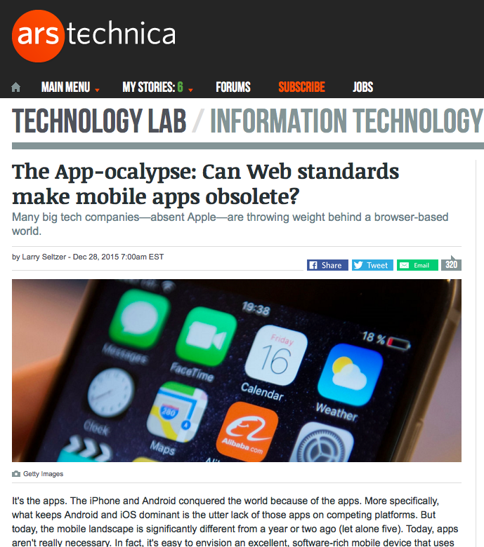

Contexts
Software Architecture in the Real World
Sam Nabi / @samnabi
User environments
User impacts
Business models
Other software
Context 1
User environments
You have no control over the network
Anticipate connectvity issues
You have no control over the device
| 312 x 390 | 3840 x 2160 | 2160 x 1200 |
Internet of Things
In-app browsers
Progressive enhancement
Ability
Users may manipulate your software at the OS or browser level (zoom, colour, font)
| Colour-blindness |
8% Men 0.5% Women * Of Northern European ancestry. USA National Institutes of Health |
| Dyslexia |
2-3% StatCan Publication No. 89-628-X |
Context 1: User environments
Questions?
Context 2
User impacts
"People aren't edge cases"
— Carina C. Zona, Schemas for the real world

"Artificial intelligence expert Vivienne Ming said machine-learning systems often reflect biases in the real world. Some systems struggle to recognize non-white people because they were trained on Internet images which are overwhelmingly white, she explained."
Social tools, social responsibility
Inclusive spaces
Blocking, muting, reporting, content control, accessibility
"Blocking functionality must be part of any social network’s minimum viable product. Because without a block button, social networks are essentially unusable — not viable — for many marginalized people." — Eva Gantz
Real-life conequences
Even algorithms can harass people
Context 2: User impacts
Questions?
Context 3
Business Models

Growth
Acquisition
Abandonment

What's your business stack?
Cloud services
APIs
App store requirements
Context 3: Business Models
Questions?
Context 4
Other software
Other software
|  |


Google Reader alternatives
Terrible cloud overkill
Maciej Ceglowski - The Website Obesity Crisis
Twitter Still supports SMS
Context 4: Other software
Questions?
Thanks
| sam@samnabi.com | |
| @samnabi | |
| Github | samnabi |
| Website | samnabi.com |